Smoothing
code:
-
2D Box Filter
- makeBox2D.m - creates a 2D box filter.
- convolve2D.m - convolves a 2D filter and an image.
- convolve.m - helper function that calls convolve2d or convolve1d (defined below) depending on arguments. 1D Box Filter
- makeBox1D.m - creates a 1D box filter.
- convolve1D.m - convolves a 1D filter and an image. 1D Gaussian Filter
- makeGauss1D.m - creates a 1D Gaussian filter.
I've written a single convolve() function that takes an image and a mask (the mask is assumed to be normalized). The function then determines whether the mask is 1D or 2D and then calls the corresponding convolve1D() or convolve2D(). The convolve1D() function determines if the mask is a row or column vector and applies the filter appropriately.
Each of the different filters then have their own mask generation function. There is makeBox2D() - which generates a 2D box filter, makeBox1D() - which generates the 1D box filter, and makeGauss1D() - which generates the 1D Gaussian filter. These masks can each be used in the convolve function to get the smoothing result.
Both of the makeBoxND() functions take a single paramter - the size of the box filter. The makeGauss1D() function takes asingle parameter Sigma, which controls the smoothing and width of the Gaussian filter. As directed, the filter width is set to 1+6*Sigma, to give sufficient coverage for the effect. All make functions return a normalized mask that can be used in the convolve function described above.
examples:
- I show the results of all three approaches together below to make comparison easier.
 Original | 2D Box filter, width=3 |
 2D Box Filter, Width =5 | 2 x 1D Box filters, width=5 |
2 x 1D Guassian Filter, Sigma=1 | 2 x 1D Gaussian Filter, Sigma=3 |
| The above examples demonstrate each of the filters described above. As the images show, the wider the Box or larger the Sigma the greater the smoothing effect. It's also clear to see that the 2D Box Filter with Width=5 (5x5 Box filter), has the same smoothing effect as 2 1D Box Filters with Width=5. The difference betwen Sigma's is especially noticeable - as shown in the last two images. | |
 Original | 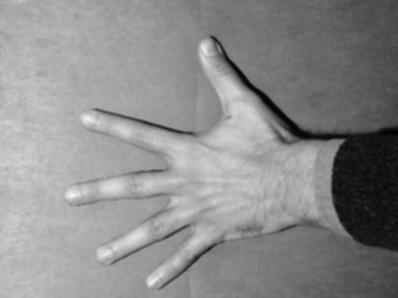 2D Box filter, width=3 |
 2D Box Filter, Width =5 | 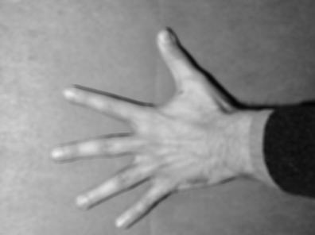 2 x 1D Box filters, width=5 |
| 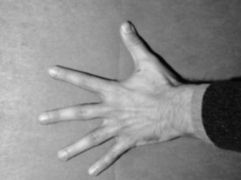 2 x 1D Guassian Filter, Sigma=1 | 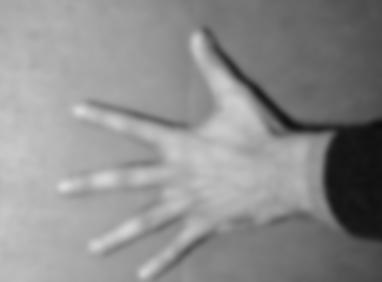 2 x 1D Gaussian Filter, Sigma=3 |
| The same effects can be seen as applied to the hand image. Again as we increase the Sigma term (which increases the size of the Guassian filter), or incrase the size of the Box filter the effect increases. | |
Original | 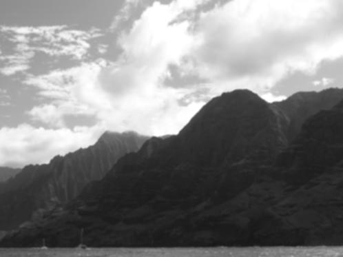 2D Box filter, width=3 |
2D Box Filter, Width =5 |  2 x 1D Box filters, width=5 |
| 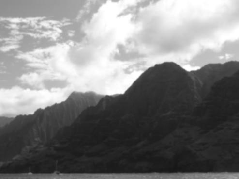 2 x 1D Guassian Filter, Sigma=1 | 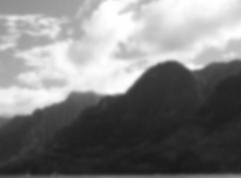 2 x 1D Gaussian Filter, Sigma=3 |
| A final example of smoothing, using one of my own images. Again the smoothing is quite evident, especially in the last images, giving the effect of a foggy camera lens. | |
Edges
code:
-
X,Y derivative
- makeDiff1D.m - creates a 1D derivative estimation filter.
- convolve1D.m - convolves a 1D filter and an image (reused from smoothing).
- rescaleDiffImage.m - helper function that shifts and scales the intensities in a derivative image so they are in the range [0,255]. Only used for display purposes. Edge Map
- edgeMap.m - generates the edge map (ie gradient magnitude) of an image. This function makes use of the derivative code above as well. Orientation Map
- orientationMap.m - generates the orientation map (ie gradient orientation). Also makes use of the derivative code above.
I've reused the convolve code written above, and added a derivative filter generator. This allows simple generation of both X and Y (by using transpose of the output of makeDiff1D()) derivatives. I chose to use the simple 1D derivative filters of width = 3.
Then I've also added two methods, edgeMap() which takes and image and generates the gradient magnitude images, and orientationMap() wihch takes the image and generates the gradient orientation at each pixel. Both filters make use of the derivative code.
For the edges at different scale portion, I reuse the Gaussian filters used in the first section, and the derivative code used in this section.
examples:
Derivative in X-direction | 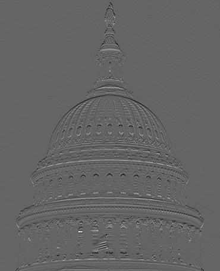 Derivative in Y-direction. |
Edge map (ie gradient magnitude) | 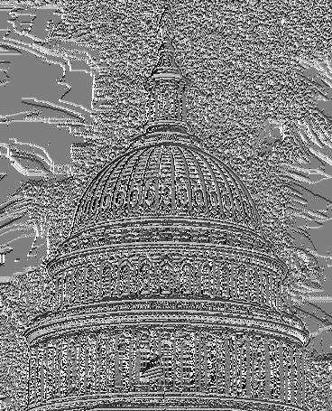 Orientation map (ie gradient angle with x-axis) |
|
The above images demonstrate the use of the derivative filter on the provided capitol image. This image makes it easy to see a difference between the x and y derivative images. The Derivative in the X-Direction emphasizes all the vertical lines (ie the sides of the windows), whild the Derivative in the Y-Direction emphasizes all the horizonal lines in the image (ie the horizontal rings on the dome). The edge map is also shown - as this incorporates both directions, you can see both vertical and horizontal lines very prominantly. It's interesting that this gradient magnitude doesn't show as much noise as the orientation map. This may be in part to the rescaling of the intensities for display. The orientation map is next, and as mentioned, is extremely sensitive to noise. There appears to be a great deal of noise in the background around the capitol dome. Even with the noise it's easy to see the shape of the capitol. | |
 Derivative in X-direction | 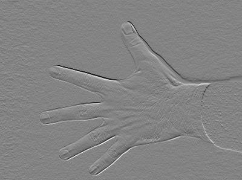 Derivative in Y-direction. |
| 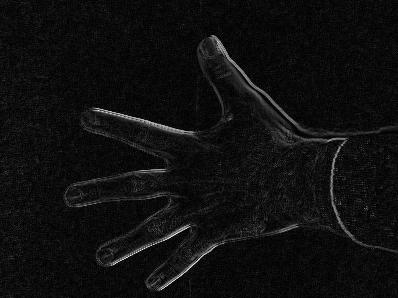 Edge map (ie gradient magnitude) | 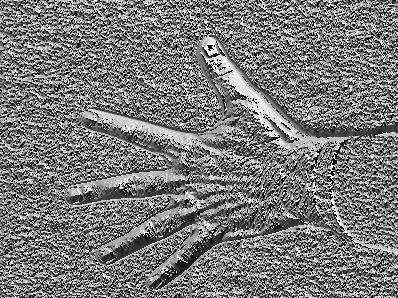 Orientation map (ie gradient angle with x-axis) |
|
The provided hand images are also shown here. Again the X and Y derivatives are plain to see, as the vertical and horizontal lines are show very prominantly in each respectively. Again the edge map is shown, and contains both horizontal and vertical edges. This image has a little more texture in the background, and becomes visiable in the background of the edge map. That same texture becomes very visible in the orientatin map. But again, even with all the background noise, the shape of the hand is still visible. | |
| 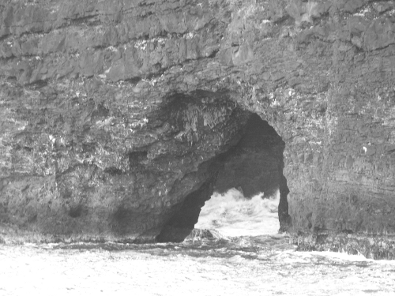 Original | |
| 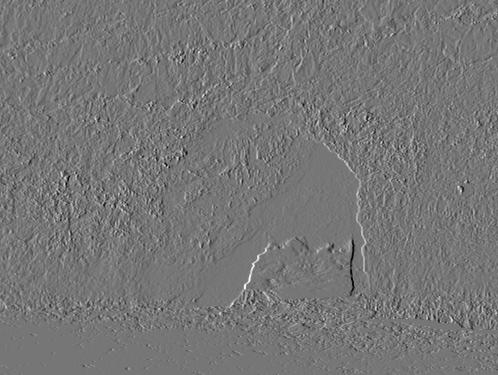 Derivative in X-direction | 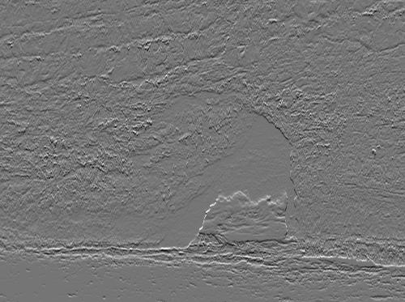 Derivative in Y-direction. |
| 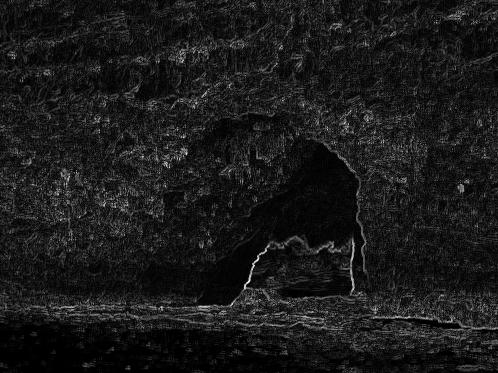 Edge map (ie gradient magnitude) | 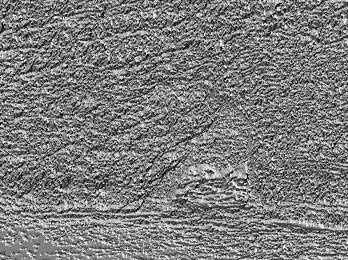 Orientation map (ie gradient angle with x-axis) |
|
This final example of the edge map is one of my own images. I've shown the original at the top for reference. I thought this image might provide some interesting edge examples, as it would be neat to be able to extract the shape of the arch from the image. Unfortunately this isn't completely possible using current techniques, but it does she some light on the difficulties of edge detection. The derivative images both show some contour around the arch, but also include a significant amount of background noise. This noise is propogated on to the edge map and orientation map. The orientation map is so noisy, only a faint arch way outline is even visible. | |
Edges at specific scales
In this seciton I reuse the Gaussian filters used in the first section, and the derivative code used in the frst edges section. Please see descriptions there.
examples:
Derivative in X-direction | 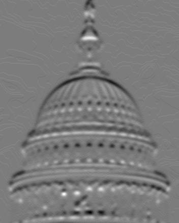 Derivative in Y-direction. |
| 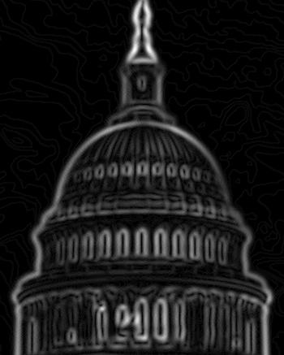 Edge map (ie gradient magnitude) | 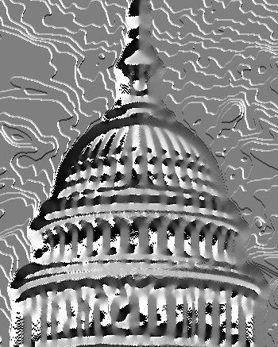 Orientation map (ie gradient angle with x-axis) |
|
This group shows the X-derivative, Y-deriviative, edge map, and orientation map on the capitol image after smoothing with Sigma=3. The edges on these images appear much more thick - probably because they are now much more gradual changes in intensity instead of the sharp changes in the original image. Likewise the noise in the orientation image is much lessened. You can see the capitol dome quite well (again the edges are very thick), and the background noise seems to have smoohted into homogenous regions. | |
| 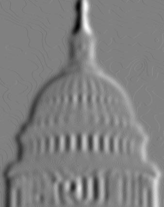 Derivative in X-direction | 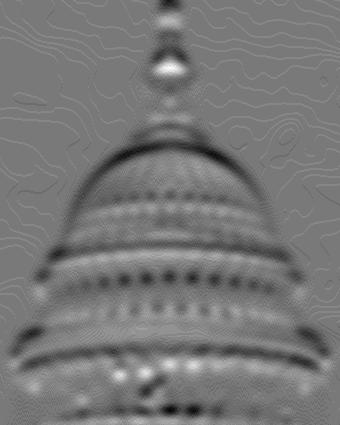 Derivative in Y-direction. |
| 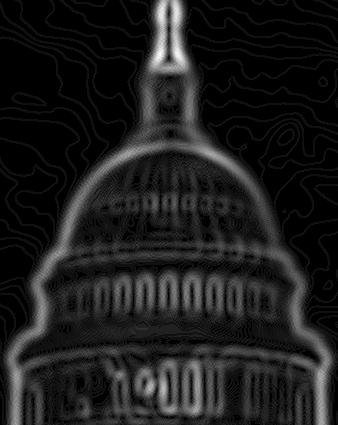 Edge map (ie gradient magnitude) | 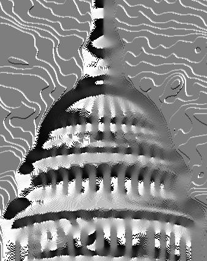 Orientation map (ie gradient angle with x-axis) |
|
This group shows the same images, but with Sigma=5. Again this shows even thicker lines. Additionally, there is so much smoothing going on that some of the featurea are starting to blend into each other. This results in edges that are less distinct. For example it's much more difficult to pick out individual windows in the derivative images, a task that was simple before.
| |
Template matching
code:
- correlate.m - correlates an image with a 2D mask.
- makeStencil.m - creates a stencil that can be used for pattern matching from an image.
- rescaleDiffImage.m - helper function from the Edges section, that shifts and scales the intensities in a derivative image so they are in the range [0,255]. Only used for display purposes, we use it here as well.
I've tried to be correct in using a convolution for the smoothing and edge filter tasks, and a correlation for this template matching task. Consequently I created a correlation function. Instead of handling both 1D and 2D, this function only handles correlation with a 2D mask.
To make things easier, I also created a makeStencil function that takes an image (a cropped image of the target shape), and makes it square and odd-sided, and normalizes the non-zero pixels to sum to 1. All of these features make the correlation implementation very straightforward.
Finally, we re-use the rescaleDiffImage here, as the results of the correlation contain a very large range of values, in particular very high values. We use this function for displaying the the correlation results.
examples:
 Search image | 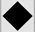 Target shape |
| 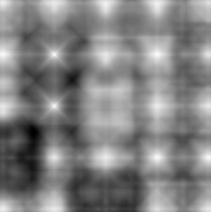 the scaled results of the correlation. | 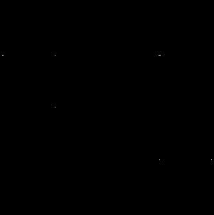 Thresholded results of the correlation. |
| 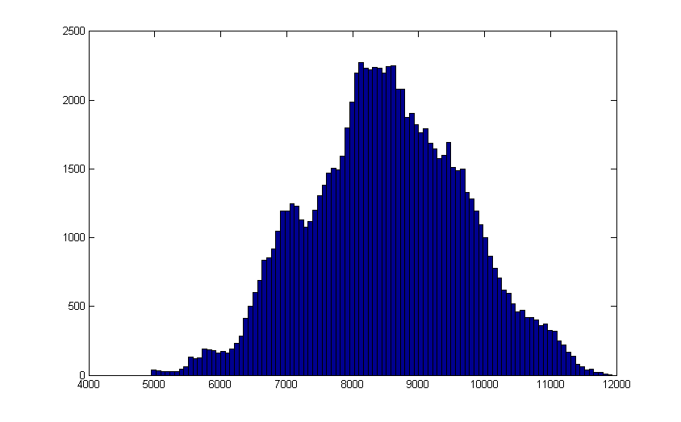 Histogram of the match result image. | |
|
The above results demonstrate the template matching code. The top left image is the "search image", or the image in which we are performing the search. The top right image is the image we will be searching for (a diamond shape). We generate the stencil from this image. The middle left image is the result of the corrlation, scaled for display. In the middle right is the result of thresholding the correlation result for the top hits. And the last image is a histogram of the correlation result. The correlation result shows several bright spots, almost like stars, these correlate well with the location of the different shapes... since there is some overlap with each shape, all shapes appear to give some "good" response to the correlation. And those shapes that look most like the diamond appear to give the better results. By looking at the histogram of the image we were able to pick a threshold of 1.18x104. This selection took some back and forth of looking at the histogram and the resulting thresholded image.
As you can see this thresholded image isn't a perfect correlation. Some of the white dots (indicating matches) aren't necessarily over a diamond, but every dot is over a "diamond-like" shape, so we haven't done too bad with this very simple approach.
| |
Search image | 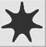 Target shape |
| 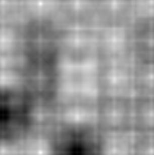 the scaled results of the correlation. | 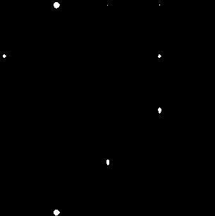 Thresholded results of the correlation. |
| 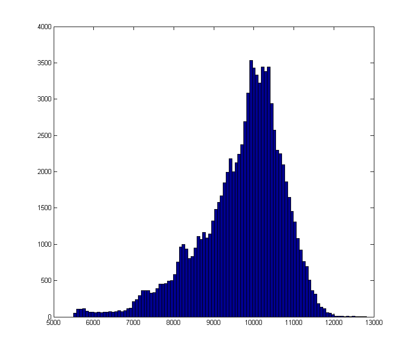 Histogram of the match result image. | |
|
This time we use the same search image but select a different target shape, which we affectionately call the "weird" shape. Again we show the scaled correlation results and a thresholded result. Because we are searching the same image, we actually ended up using the same threshold for this image, again determined from the histogram of the correlation image. The results are also respectable. We found both of the weird shapes, but also have 4 false positives. The false positives are mainly due to shapes that are very similar to the target shape.
| |
 Search image | Target shape |
| 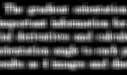 the scaled results of the correlation. | 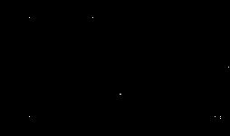 Thresholded results of the correlation. |
Histogram of the match result image. | |
|
In this example we are looking for the shape of the letter e in a scanned text document. We approached this problem the same as the others, but found that the whitespace between the letters was actually giving a much higher correlation score to the target letter, than any of the letters. In fact our result looked just like the image in the middle left, except with reversed colors - indicating a high match in the margins and low match on the letters. To solve that problem, we simply inverted the intensities in the original image, so that letters are white and background is black. This allows the mask and letter correlation to be the higher correlation scores. The results again are not bad. As shown in the thresholded match image, the correlation found 5 "e" shapes. While it's hard to determine precisely the matches, a general eye-ball comparison leaves one to thing that we landed on an "e" in all but 5 of those responses. Which seems pretty good. Unfortunately we also missed several e-shapes in other parts of the text image.
We selecte a threshold of 950, again by examining the histogram and the results of various threshold choices. Going much lower than this threshold presented too many false positives.
| |
Search image | 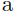 Target shape |
| 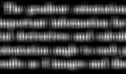 the scaled results of the correlation. | 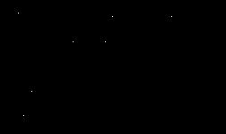 Thresholded results of the correlation. |
| 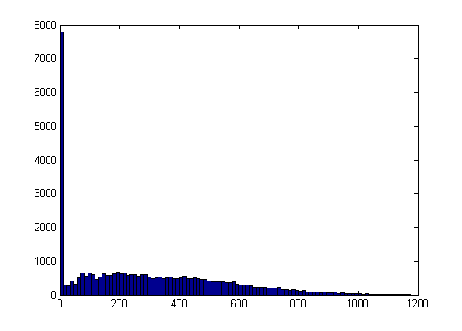 Histogram of the match result image. | |
|
We return to the text image for our final example. We approached this problem in the same way, and chose a threshold of 1.14x103. While both targets were searched for in the same search image, threshold choiced appeared to be more sensitve than in the shapes example.
Our results are also drastically different from the "e" shape search. Again, using eye-ball comparisons, we appear to have found several false positives. I can convince myself that at least 2 of the matched locations is an "a", the other 5 appear to be false positivies. I attribute this poor performance mainly to the likeness "a" has to so many other letters. I am unsure why the "e" search appears to have performed so much better, since both searches used the same methods.
| |